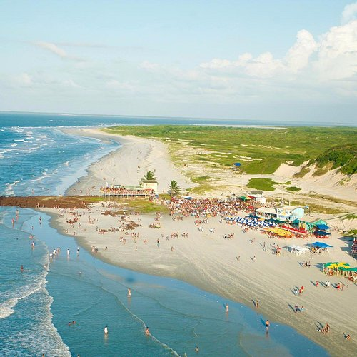

O Pará é um estado localizado na região Norte do Brasil, com uma grande parte de seu território coberto pela Amazônia. Sua capital, Belém, é um importante centro comercial e cultural da região. A economia do Pará é diversificada, com destaque para a extração de minério, especialmente o ferro, e para a agricultura, com a produção de açaí, soja, e cacau. O estado também é conhecido pela indústria madeireira e pesqueira. O Pará possui uma rica herança cultural, com influências indígenas, africanas e europeias, que se refletem na culinária (como o famoso tacacá e a maniçoba) e nas festas tradicionais, como o Círio de Nazaré, uma das maiores celebrações religiosas do Brasil.
